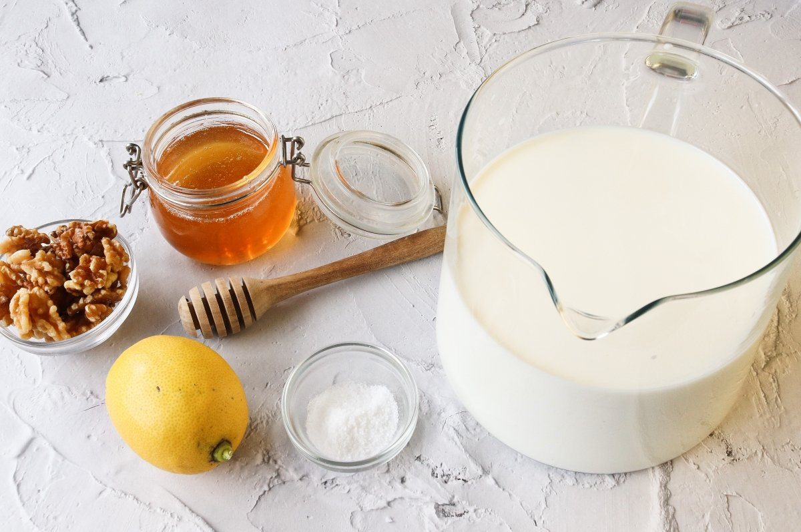
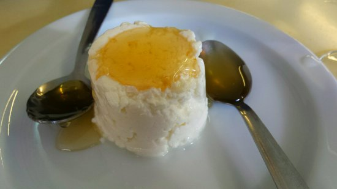
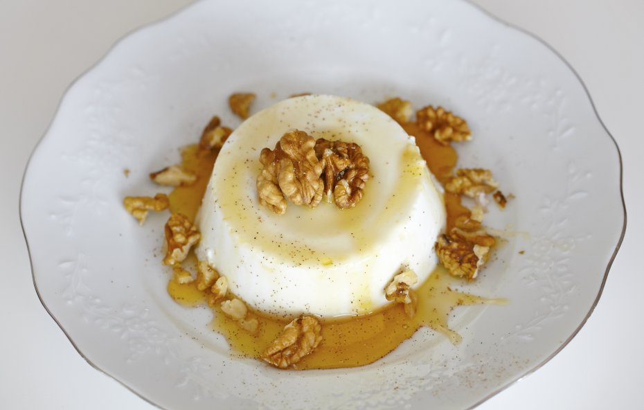
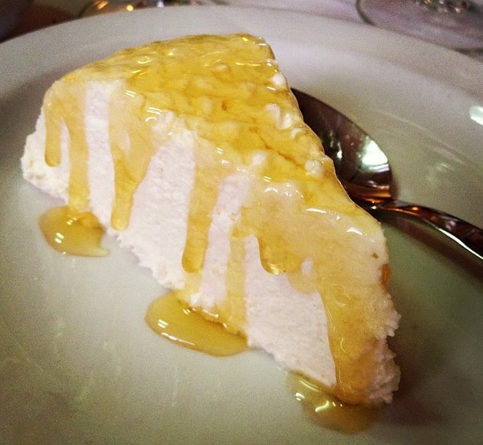
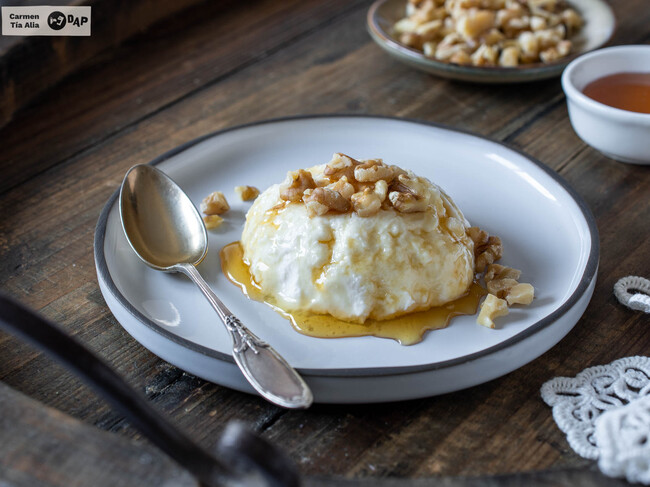
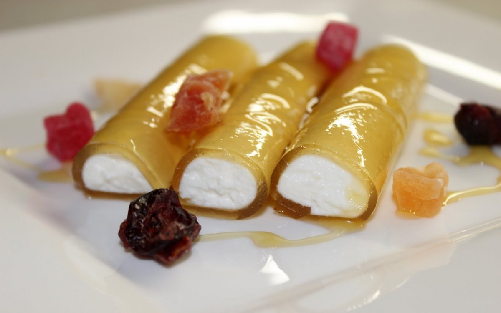

Mel i mató
És una de les postres més tradicionals de Catalunya, un mató recobert de mel, però és molt antic perquè ja en menjaven els grecs.
El mató es preparava abans amb llet de cabra però ara n’hi ha també d’ovella i de vaca. El costum és de deixar-la prendre amb herba col, embolicar-ne la quallada en un llenç i deixar-ho penjat tota la nit perquè en degoti el xerigot. El resultat és un formatge molt tendre i molt blanc, una mena de crema.
En aquesta recepta, aprendràs a elaborar el teu propi mató casolà per després combinar-lo amb la dolçor natural de la mel i el toc cruixent de les nous.
Ingredients:
- 1 litre de llet sencera de vaca (preferiblement fresca)
- 40 mil·lilitres de suc de llimona (aproximadament el suc d’1 llimona mitjana) o 2 cullerades soperes
- 1 pessic de sal (opcional, per potenciar el sabor)
- Mel de bona qualitat (romaní, mil flors, etc.), al gust
- (Opcional) Nous pelades
- (Opcional) Ametlles pelades
- (Opcional) Figues
- (Opcional) Meduixes

Passos a seguir:
- En un cassó, escalfa la llet sencera amb el pessic de sal (si la fas servir) a foc mitjà-alt. Remena de tant en tant per evitar que s’enganxi al fons. Just abans que comenci a bullir (quan vegis petites bombolles a les vores i vapor, aproximadament a 70-80 ºC), retira el cassó del foc.
- Immediatament, afegeix el suc de llimona a la llet calenta. Remena suaument durant uns segons perquè es barregi bé. Tapa el cassó i deixa’l reposar a temperatura ambient durant uns 30 minuts, sense moure’l. Durant aquest temps, la llet es tallarà, separant-se la part sòlida (el futur mató) del sèrum líquid i groguenc.
- Prepara un bol gran. Col·loca a sobre el colador fi i folra’l amb el drap de cotó net o la gassa de formatgeria, assegurant-te que el drap cobreixi bé el colador i en sobri una mica per les vores.
- Amb cura, aboca la llet tallada sobre el drap. El sèrum començarà a filtrar-se cap al bol i la part sòlida, el mató, quedarà retinguda al drap.
- Pots lligar les puntes del drap formant un farcellet i penjar-lo sobre el bol (per exemple, lligat a una cullera de fusta travessada sobre el bol) o simplement deixar-lo al colador. Deixa que el mató s’escorri a la nevera durant un mínim de 4 hores, o idealment tota la nit. Com més temps s’escorri, més consistent quedarà.
- Un cop escorregut, treu el mató del drap amb cura i posa’l en un recipient hermètic a la nevera. Es conserva bé durant 2-3 dies.
- Un cop tinguis el teu mató casolà llest i refredat, només queda servir. La manera clàssica de servir el mel i mató és ben senzilla: col·loca una porció generosa de mató en un plat de postres o en un bol individual. Rega-la abundantment amb una bona mel de la teva preferència. La mel de romaní o de mil flors són opcions excel·lents.
- Pots acompanyar-lo amb unes quantes nous pelades, senceres o trossejades, que aporten un toc cruixent molt agradable. També es pot servir amb altres fruits secs com ametlles o avellanes, o fins i tot amb fruita fresca de temporada com figues o maduixes.
Possibles presentacions:





Molt senzill de fer!